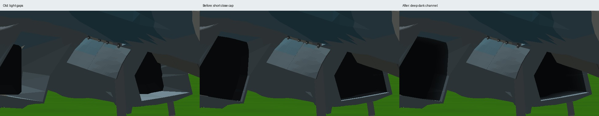
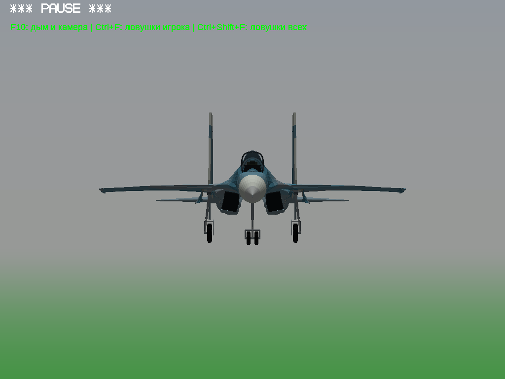
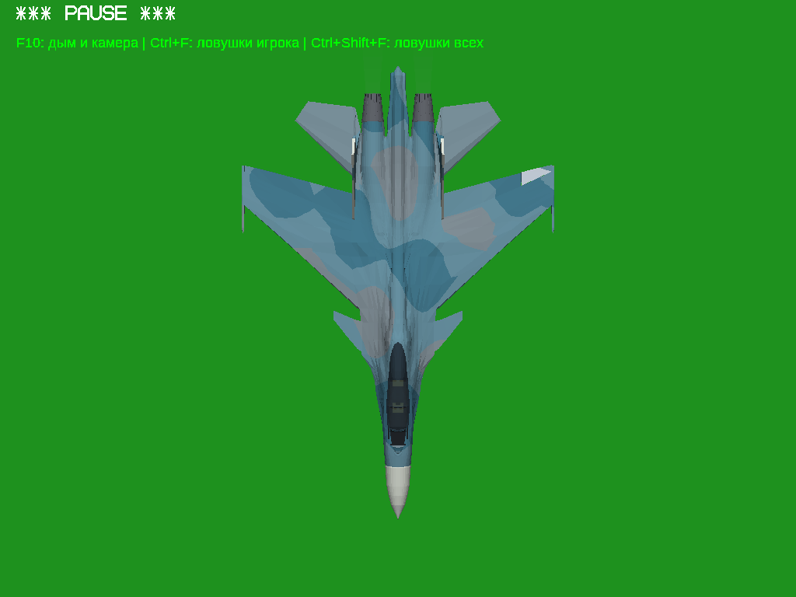
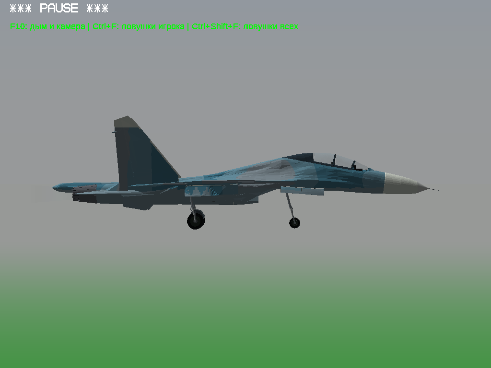
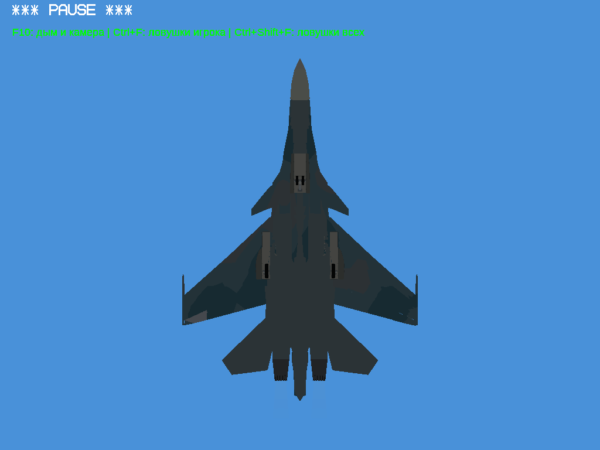

Изменены только два IntakeDuct. Внешняя окраска и все анимационные узлы сохранены. Это улучшение впуска, а не заявление об устранении всех старых дефектов самолёта.
Технический отчёт · PDF · Проверка геометрии · Общий осмотр
Слева — старая EA3d с просветами, по центру — текущая ECEE, справа — новая c71a. Это реальные игровые кадры Win64/OpenGL под Wine, без ретуши.





G — выпуск/уборка; Alt+5 — фонарь; B — аэротормоз; сопла/форсаж — изменение тяги. Посмотрены последовательности кадров, логи и крупные планы. Расчёт 201 позы не заменяет непрерывную проверку всех возможных условий.
Обе архитектуры запущены на Windows Server 2022 (x86 через штатный Win32/WoW64). x86 проверен обычными командами игры; x64 — диагностическими ракурсами. Это дополнительные проверки, основные сравнения выше сняты под Wine.